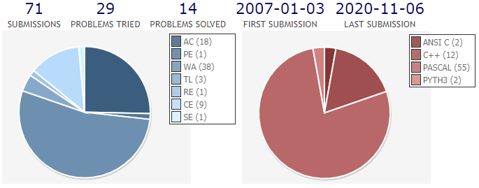

Education & Work Experience
UVa Programming Contest Club @ Banqiao Senior High School
2006 - 2009

My statics on UVa Online Judge
Skills used:
- Algorithm
- Programming
B.S., Dept. of Plant Pathology, National Chung Hsing University
2009 - 2013
M.S., Dept. of Plant Pathology, National Chung Hsing University
2013 - 2015
Ph.D.,Dept. of Plant Pathology, National Chung Hsing University
2015 - 2020

Study on the symbiotic relationship between termites and fungi (Chiu et al. 2019).
Skills used:
- Mycology
- Entomology
Analysis of Sarocladium spp. associated with rice leaf sheath rot and the discovery of two new species (Ou et al., 2020).
Skills used:
- Plant pathology
- Phylogenetic analysis
Biotechnology Program of Industry-Academia Collaboration
(with Bioresource Collection and Research Center (BCRC))
2015 - 2019
Artificial cultivation of Isaria cicadae
Skills used:
- Fungal physiology
- Mushroom cultivation
Taichung Harbor Fire Brigade
2020 - 2021
30 meters in the air, conveyor belt fire (Nov 2020)
Skills used:
- Emergency Medical Technicians (EMT-1)
Research assistant, Dept. of Plant Pathology, National Chung Hsing University
2021 - now
Development of an application-oriented rice blast early warning system.
Skills used:
- Plant disease epidemiology
- Data visualization
- Deep learning
Skills
Programming languages
-
PHP
-
HTML/CSS/Javascript
-
Python
-
JAVA
-
Pascal
Human languages
-
Chinese (Native)
-
Japanese (JLPT N1)
-
English
Research
-
Mycology
-
Plant pathology
-
Phylogenetic analysis
-
Single-board microcontrollers/computer
-
Meteorological data analysis (GFS/WRF forecasting model)
Others
-
3D printing/Fusion 360
-
Linux
-
Single-board microcontrollers/computer
-
Meteorological data analysis (GFS/WRF forecasting model)
Certifications
-
Drone operator certificate (ordinary level)Issued by CAA (2021-)
-
3D Printing Engineer/Additive Manufacturing EngineerIssued by Ministry of Economic Affairs (2021-)
-
Japanese-Language Proficiency Test (JLPT) N1(2021)
-
TOEIC 850(2012)
-
Emergency medical technician (EMT-1)(2021-2023)
Equipments
-
DSLRNikon D5300 + Nikon Micro Nikkor 60mm F2.8D
-
DroneDJI Mini 2
-
3D PrinterAnycubic i3Ender-3 Pro